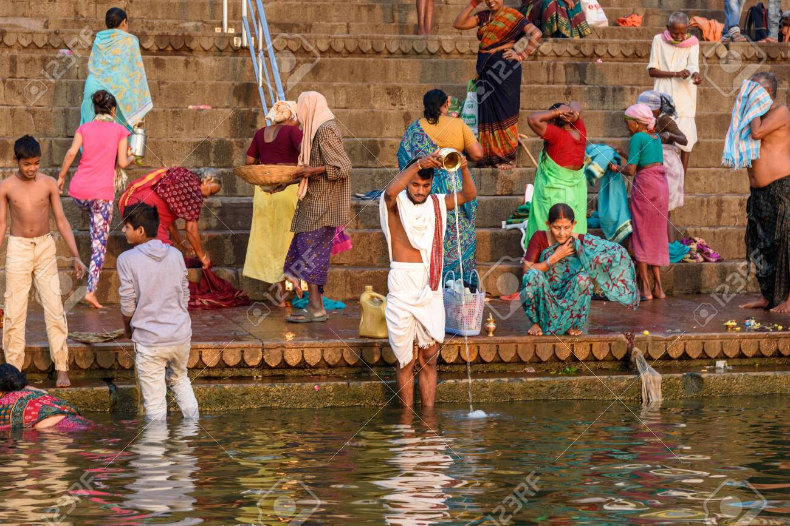

歷史簡介
瓦拉納西的歷史可追溯至公元前 1200 年，是世界上持續有人居住最久的城市之一。古稱 Kashi，意思是「光之城」，英國統治時期則稱 Benares。公元前 6 世紀，這裡是十六大國之一 Kashi 的首都；公元前 528 年，佛陀在城外的鹿野苑初轉法輪，令此地同時成為佛教四大聖地之一。
中世紀歷經德里蘇丹國與蒙兀兒帝國的統治，18 世紀在馬拉塔人與英國東印度公司之間幾度易手，1794 年正式納入英國管治，成為恆河沿岸的重要商埠。印度獨立後，瓦拉納西成為北方邦的重要城市與印度教研究重鎮。

文化特色
瓦拉納西是印度教七大聖地之一，恆河在這裡由南向北轉彎，被視為最神聖的一段。河岸的八十八道河壇是城市真正的中心：清晨有人沐浴、洗衣、做瑜伽，黃昏則在主要河壇舉行恆河夜祭。城裡的巷弄窄得只容一人通過，牛隻與送葬隊伍共用同一條路。
這裡也是印度古典音樂重要流派 Banaras gharana 的發源地，以及 Banarasi 絲綢紗麗的產地；梵語與印地語研究在這座城市已經延續了幾百年。